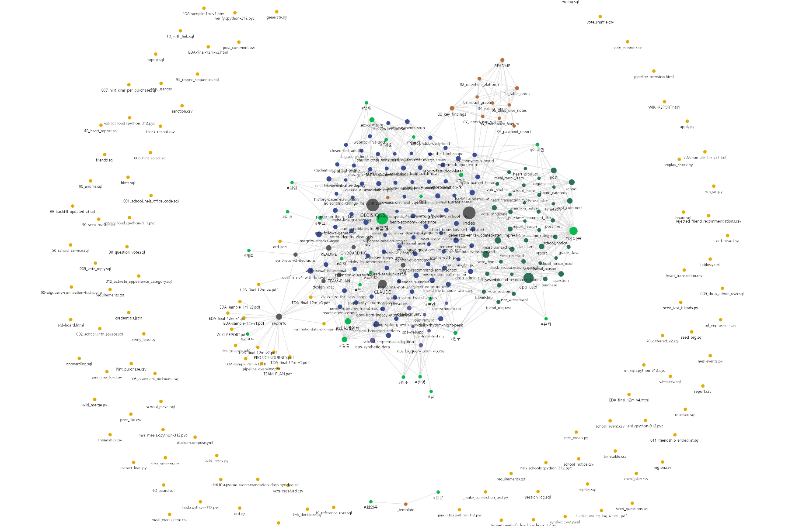
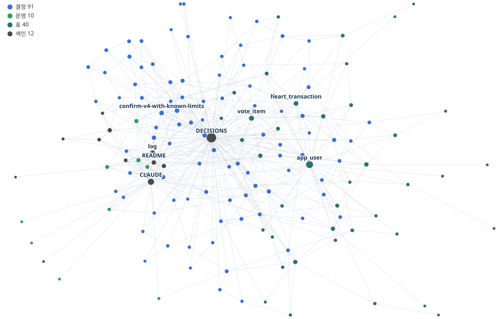

왜 바꿨고, 무엇이 달라졌으며, 4주 뒤에도 그 판단이 유효한가
사람이 읽는 위키와 목적이 다르다. 독자가 에이전트다.
사람과 달리 LLM 에이전트는 어제 한 일을 기억하지 못한다. 새 대화를 열면 이 프로젝트가 무엇인지, 왜 그렇게 정했는지를 다시 알려줘야 한다. 그 "다시 알려주는 비용"이 이 문서가 다루는 전부다.
흔히 쓰는 대응이 둘 있고, 둘 다 값을 치른다.
| 대응 | 어떻게 되나 |
|---|---|
| ① 큰 문서 하나를 매번 읽힌다 | "우리 프로젝트 문서" 한 파일을 통째로 읽힌다. 확실하지만 질문과 무관한 내용까지 전부 값을 낸다. 문서가 자랄수록 매 세션의 고정비가 커진다 |
| ② 대화 세션을 길게 유지한다 | 한 번 설명한 맥락을 잃지 않으려고 세션을 안 끊는다. 그런데 대화가 길어질수록 이후의 모든 요청이 그 누적 대화를 다시 싣는다. 작은 수정 하나에도 앞선 맥락 전체의 값을 낸다 |
지식을 작은 노드로 쪼개고, 링크로 잇고, 필요한 것만 골라 읽게 한다. 핵심은 파일을 잘게 나누는 것이 아니라 경계를 의미와 일치시키는 것이다 — 노드 하나가 "결정 하나"이면, 그 결정이 궁금할 때 딱 그만큼만 읽으면 된다.
| 원칙 | 이 저장소에서의 모습 |
|---|---|
| 원본은 고치지 않는다 | raw/ — 회의록·구 서비스 분석·외부 스펙. 나중에 생각이 바뀌어도
원본은 그대로 두고 새 결정을 따로 적는다 |
| 파생 문서는 재생성한다 | 색인·표 페이지는 스크립트가 만든다. 손으로 고치지 않는다 — 고쳐도 다음 생성 때 날아간다 |
| 노드 = 의미 단위 | 결정 하나 = 파일 하나. 제목·날짜·갈래·상태를 frontmatter 에 단다 |
| 링크로 잇는다 | [[위키링크]]. 뒤집힌 결정은 superseded_by 로
후속 결정을 가리킨다 |
| 찾는 규율이 이득을 만든다 | grep 으로 파일명만 받고, 이름을 보고 골라, 그 노드만 읽는다. 매칭된 것을 전부 읽으면 쪼개기 전보다 나빠진다(5장) |
사람은 긴 문서를 훑어보고 필요한 곳만 눈으로 건너뛴다. 비용이 거의 안 든다. 에이전트는 읽은 만큼 값을 낸다. 그래서 "찾기 쉬움"이 곧 "쌈"이고, 그것이 문서를 노드로 쪼갤 이유가 된다.
또 하나 — 사람 위키는 사람이 낡음을 눈치챈다. 여기서는 코드도 진실이고 코드는 매 커밋 바뀐다. 문서가 조용히 낡는다. 그래서 lint 연산이 따로 있다(7장).
문서가 늘면서, 한 번 볼 때마다 전부를 읽어야 하는 구조가 됐다.
| 무엇이 | 왜 문제였나 |
|---|---|
| DECISIONS.md 33,792 토큰 |
결정 56개가 한 파일에 시간순으로 쌓였다. 결정 하나는 중앙값 680토큰인데 실제로는 파일을 통째로 읽었다 — 작업 중 시스템이 "내용이 너무 커서 포함할 수 없다"며 잘라낼 정도였다 |
| CLAUDE.md 13,518 토큰 |
에이전트가 매 세션 무조건 읽는 파일. BigQuery 설정처럼 특정 작업에만 필요한 내용이 항상 따라왔다 |
| 뒤집힌 결정이 그대로 살아 있었다 |
힌트 요금을 순차 4단계에서 선택형으로 바꿨는데 옛 결정이 같은 파일에 남아 있었다. 제목만 보면 서로 모순되는 항목도 있었다 |
| 표 하나를 알려면 네 군데를 열어야 |
heart_transaction 은 DDL 주석 · 결정 6개 · 정합성 검사 5종 ·
정책 7파일에 흩어져 있었다 |
| 손으로 만든 목록이 조용히 낡았다 |
"비어 있는 테이블" 목록이 실제와 어긋나 있었다 — 20행짜리 표를 비었다고 적어두고, 정작 빈 표는 빠져 있었다 |
이것이 문서만 봐서는 안 보이는, 실제 작업 방식의 문제였다.
맥락을 다시 설명하는 것이 비싸니까 세션을 일부러 유지했다. 스키마 컬럼 하나를 고치는 작은 일도, 새 대화를 열어 "이 프로젝트는 이런 거고 저 표는 이래서 저렇게 만들었고…"를 다시 말하느니 어제 쓰던 대화창을 이어 쓰는 편이 싸 보였기 때문이다.
그런데 그 선택은 정반대의 값을 치른다. 대화가 길어질수록 그 뒤의 모든 요청이 누적된 대화 전체를 다시 싣는다. 작은 수정 하나가 앞선 두 시간치 맥락의 값을 낸다. 게다가 길어진 세션에는 이미 끝난 작업의 시행착오·실패한 시도·중간 출력이 그대로 남아 있어서, 정작 필요한 정보의 밀도는 계속 떨어진다.
세션에만 있는 맥락은 저장소에 없는 맥락이다. 그 대화창을 닫는 순간 사라지고, 팀원은 처음부터 볼 수 없으며, 몇 주 뒤의 나도 못 찾는다. "왜 그렇게 정했나"가 대화 기록에만 있는 상태였다.
위키로 바꾼 뒤에는 세션을 짧게 끊을 수 있게 됐다. 새 대화를 열고 필요한 노드 하나(평균 1,268 토큰)만 읽으면 그 작업에 필요한 맥락이 선다. 작은 작업일수록 이득이 크다 — 작은 작업에 긴 세션을 물고 있는 것이 가장 비쌌기 때문이다.
전부 오류를 내지 않는다. 문서는 잘 읽히고 링크도 멀쩡하다. 다만 낡았거나, 필요 없는 것까지 딸려올 뿐이다. 이 프로젝트가 스키마에서 계속 상대해 온 "조용히 틀리는 것"이 문서에서도 똑같이 나타난 것이다.
원본은 사람만 고치고, 위키는 에이전트가 소유하고, 규약이 그 일을 정의한다.
raw/docs/CLAUDE.md| 갈래 | 개수 | 무엇이 들어 있나 |
|---|---|---|
결정 docs/decisions/ | 91 | 결정 하나 = 파일 하나. 결정 / 이유 / 대안 / 영향. 갈래는 검증 21 · 파이프라인 18 · 투표 8 · 보안 7 · 하트 6 순. 뒤집힌 것 4건은 취소선과 화살표로 후속 결정을 가리킨다 |
표 docs/tables/ | 40 | 생성물. 표 하나의 DDL·결정·검사·정책을 한 장에 모은다 |
운영 docs/ops/ | 10 | "이 작업 어떻게 하지"에 답하는 절차 문서 |
| 색인·규약 | 13 | index(생성물) · DECISIONS · CLAUDE ·
log · README · TEAM-PLAN ·
ONBOARDING 등 |
원본 raw/ | 9 | 불변. 바뀐 것은 새 결정 노드로 적는다 |
노드와 링크를 그림으로 보면 문서로는 안 보이는 것이 보인다.

DECISIONS · index · CLAUDE 가 큰 원으로 보인다.
바깥에 흩어진 노란 점들은 위키가 아니다 — SQL · 스크립트 · 데이터 파일이라
링크가 없다. 이 대비가 곧 "무엇이 문서화돼 있고 무엇이 아닌가"다.

python db/wiki_graph.py (노드 153 · 링크 505).
스크린샷은 찍은 순간의 것이고 배치가 매번 달라지지만, 이쪽은 씨앗이 고정돼
같은 그림이 다시 나온다. 위키 노드만 남기고 SQL·스크립트는 뺐으며,
생성 색인(index)도 뺐다 — 모든 노드를 가리켜서 그리면 그래프가
통째로 별 모양이 되고 결정끼리의 구조가 안 보인다.
| 보이는 것 | 뜻 |
|---|---|
가운데 큰 회색 — DECISIONS |
결정 색인. 모든 결정이 여기로 모인다 |
오른쪽 청록 뭉치 — app_user ·
heart_transaction · vote_item |
표 페이지들. 결정이 많이 얽힌 표일수록 크다. 이 표를 건드리면 무엇이 딸려 오는지가 그대로 보인다 |
| 파란 점들의 그물 | 결정 91개. 서로 이어져 있으면 link_decisions.py 가
'이어지는 결정'을 붙인 것이다 |
| 바깥의 외톨이들 | 링크가 하나뿐인 노드. 나쁜 신호는 아니지만 볼 값은 있다 — 아무도 안 가리키는 결정은 잊힌 결정이 되기 쉽다 |
이 저장소의 docs/ 는 옵시디언 볼트로 그대로 열린다. 링크가
그래프가 되고 frontmatter 가 속성이 된다. 별도 도구를 붙이지 않았다.
| # | 그래프를 보다가 발견한 것 |
|---|---|
| 1 | 결정 56개가 통째로 사라져 있었다. 루트 색인 하나만 그래프에서 빼려고
-path:"DECISIONS" 필터를 걸었는데, 옵시디언의 path: 는
대소문자를 구분하지 않아 docs/decisions/ 전체가 걸러졌다.
그래프가 텅 비어서 알았다 — 파일 목록으로는 못 봤을 사고다 |
| 2 | 별 모양이 되는 것을 막았다. 모든 노드가 색인만 가리키면 그래프가
바큇살이 된다. 그래서 참조는 되도록 개별 노드를 가리킨다는 규칙을
규약에 박고, link_decisions.py 로 결정끼리 잇게 했다 |
| 3 | 색인에서 빠진 노드가 보였다. group: 웹앱 인 노드 3개가
그 갈래 자체가 색인에 없어서 통째로 빠져 있었다. 파일은 멀쩡한데 아무도
못 찾는 상태다 — 색인에 없는 노드는 없는 노드다.
이건 결국 lint 검사로 옮겼다 |
세 사고 모두 "문서를 읽어서" 발견한 것이 아니다. 모양이 이상해서 발견했다. 한 파일 시절에는 볼 모양 자체가 없었다.
같은 토크나이저로 세 시점을 쟀다. 측정 방법은 부록에 있다.
핵심은 기울기다. 위키가 2.6배로 자라는 동안 질문 하나의 비용은 972 에서 1,268 로 30% 늘었을 뿐이다. 노드 하나의 크기는 위키 전체 크기와 무관하기 때문이다. 반면 한 파일 방식은 파일이 두꺼워질수록 같이 비싸진다.
에이전트가 무조건 읽는 파일(CLAUDE.md)의 크기다.
| 개편 전 | 개편 직후 | 지금 | 지금 · 위키가 없었다면 | |
|---|---|---|---|---|
| 매 세션 고정비 | 13,518 | 10,745 | 16,982 | 약 16,700 |
개편으로 21% 덜어냈지만, 그 뒤 4주 동안 위키 사용법 자체(+3,078)와 새로 늘어난 작업(+3,079)이 그 자리를 채웠다. 위키가 없었어도 비슷한 값이 됐을 것이므로 이 항목은 본전이다. 이득은 질문당 비용에서 났다.
지식이 늘 때 결정은 노드로 흩어지고 규약은 한곳에 쌓인다. 결정 노드 전체 대비 규약의 비중은 28% → 17% 로 떨어졌지만, 절대값은 계속 는다. 노드에 담을 수 있는 것을 규약에 두지 않는 것이 이 구조를 유지하는 일이다.
토큰이 가장 크지만, 나머지가 실제로 더 자주 쓰인다.
| # | 이득 | 측정값 · 근거 |
|---|---|---|
| 1 | 질문 하나가 3.5배 싸졌다 그리고 위키가 커져도 거의 안 는다 |
1,268 토큰 (같은 내용을 한 파일로 두었을 때 4,484). 위키가 2.6배 커지는 동안 +30% |
| 2 | 세션을 짧게 끊을 수 있다 맥락을 대화에 쟁여둘 필요가 없다 |
작은 작업마다 새 세션을 열고 노드 하나(1,268)만 읽는다. 예전에는 맥락 재설명이 아까워 세션을 이어 썼고, 그 대화가 이후 모든 요청에 계속 실렸다 |
| 3 | 맥락이 저장소에 남는다 대화창이 아니라 |
결정 91개 · 운영 문서 10개. 대화에만 있던 "왜 그렇게 정했나"가 파일이 됐다 — 팀원도 보고, 몇 주 뒤의 나도 찾는다 |
| 4 | 뒤집힌 결정이 드러난다 | 4건. superseded_by 로 후속 결정을 가리키고 색인에
취소선이 그어진다. 한 파일 시절에는 옛 결정이 그대로 살아 있었다 |
| 5 | 낡음을 기계가 잡는다 | doc_lint.py 9종. 끊어진 링크 0건 유지(노드가 63% 느는 동안).
검사 셋은 실제로 당한 뒤 추가됐다 —
없는 질문 번호 · 결정 없이 쌓인 코드 · 색인에서 빠진 노드 |
| 6 | 표 하나를 한 장에서 본다 | 484 토큰. 예전에는 DDL 주석 · 결정 · 정합성 검사 · 정책 네 곳을 열어 조합해야 했다 |
| 7 | 팀이 같은 문서를 본다 | ONBOARDING 이 계정 없이 되는 길과 계정이 필요한 길을 나눠 적는다.
스키마를 건드릴 때 표 페이지 한 장이 영향 범위가 된다.
결정 하나 = 파일 하나라 커밋 diff 에 그 결정만 뜬다.
마크다운이라 새 도구를 깔라고 할 필요도 없다 |
| 8 | 구조를 눈으로 본다 | 옵시디언 그래프(4장). 문서를 읽어서가 아니라 모양이 이상해서 잡은 사고가 셋이다 — 필터 대소문자로 결정 56개가 사라진 것 · 별 모양이 되던 것 · 색인에서 빠진 노드 |
grep 에 걸린 노드를 전부 읽으면 31,655 토큰이다. 같은 내용을 한 파일로 두고 읽는 것(4,484)보다 7배 나쁘다. "합성"이라는 낱말 하나가 이제 91개 중 47개에 걸린다.
구조가 아니라 규율이 이득을 만든다 — 이름을 보고 골라 그 노드만 읽는 것. 그래서 결정의 제목과 파일명을 짓는 일이 실제 작업이다.
| 연산 | 언제 | 무엇을 하나 |
|---|---|---|
| ingest | 원본을 넣었을 때 | 무엇이 결정이고 무엇이 논의인지 가른다 → 결정 노드를 만들고 → 영향받는 문서를 고치고 → 생성물을 다시 뽑고 → 이력에 한 줄 남긴다 |
| query | 물어볼 때 | grep 으로 파일명만 받고, 이름을 보고 골라, 그 노드만 읽는다. 색인까지 읽을 필요도 보통 없다. 답이 길고 다시 쓰일 것 같으면 그 답 자체를 새 노드로 남긴다 |
| lint | 문서·스키마를 손댄 뒤 | 문서의 주장을 살아 있는 DB·파일시스템과 대조한다. 9종 |
doc_lint.py 가 보는 아홉 가지 — 숫자 · 사라진 이름 · 끊어진 링크 ·
없는 스크립트 · 낡은 생성물 · 미반영 회의록 · 없는 질문 번호 ·
결정 없이 쌓인 코드 · 색인에서 빠진 결정 노드.
뒤의 셋은 처음엔 없었다 — 전부 실제로 당하고 나서 붙였다.
숫자와 이름은 이력 서술과 기계적으로 구별되지 않는다. "그때는 30개였다"는 틀린 게 아니다. 그래서 알리기만 한다. 전부 실패로 두면 늘 빨간불이 되고, 그러면 검사 자체를 안 보게 된다.
결정이 56 → 91 개가 됐다. 늘어난 35건이 구조를 시험했다.
| 항목 | 결과 |
|---|---|
| 끊어진 링크 0 | 지켜졌다. 노드가 63% 늘었는데도 0 이다 — lint 가 실패로 잡기 때문이지 조심해서가 아니다 |
| 토큰 이득 | 커졌다. 61.6% → 71.7% (5장) |
| 뒤집힌 결정이 드러난다 | 4건. 한 파일 시절이었다면 옛 결정이 살아남아 누군가 그것을 근거로 삼았을 것이다 |
| 결정을 노드로 적기 | ⚠️ 아홉 번 어겼다. 그래서 검사를 붙였다 — 사람의 규율에 기대는 항목은 결국 어긋난다 |
| 회의록 ingest | ⚠️ 0회. 회의가 없었다 |
| CLAUDE.md 를 얇게 | ⚠️ 개편 때는 지켰다(13,518 → 10,745). 지금은 16,982 로 다시 늘었다 — 위키가 없었어도 비슷했을 값이지만(5장), 노드에 이미 있는 내용의 중복 요약이 섞여 있다. 그것을 밀어내는 일이 남았다 |
판단 기준은 둘이다 — 같은 질문에 토큰을 더 쓰거나, 관련 결정을 놓쳐
답이 나빠지거나. 4주 뒤 기준으로 둘 다 발생하지 않았다.
그래도 되돌리는 스크립트(db/wiki_merge.py)는 유지한다 — 지금 있는 노드
전부를 읽어 합치므로 개편 이후에 쓴 결정도 살아남는다.
git revert 로 하면 그것들이 함께 사라진다.
| 무엇 | 지금 값 |
|---|---|
| 규약 파일이 매 세션 붙는다 | 16,982 토큰. 중복 요약을 덜어내면 줄어든다 |
| 색인 자체가 무겁다 | 10,545 토큰. 전체 탐색 때는 이 값을 낸다(보통은 안 읽는다) |
| 규율이 무너지면 더 나쁘다 | 매칭된 노드를 전부 읽으면 31,655 토큰 — 한 파일로 두는 것보다 7배 나쁘다 |
| 파일 목록이 커지고 있다 | 골라 읽기 비용 중 파일 목록 비중이 13% → 24%. 노드 180~200개 근처에서 다시 볼 값이다 |
| 검사를 늘리는 일은 안 끝난다 | lint 6종 → 9종. 셋 다 당하고 나서 붙였다 |
본문의 숫자를 어떻게 얻었는지. python db/token_bench.py 로 재현된다.
질문 다섯(하트 경제 · 친구 끊기 · 합성 데이터 · 증분 함정 · 힌트 요금)에
답하기 위해 읽어야 하는 토큰의 평균이다. 토크나이저는 tiktoken/cl100k_base,
옛 시점은 git 에서 꺼내 같은 자로 쟀다(pre-wiki · 9a10db0).
| 경로 | 방법 | 지금 규모 |
|---|---|---|
| A | 파일을 통째로 읽는다 — 개편 전의 실제 습관 | 92,384 |
| B | 한 파일에서 grep 하고 그 구간만 읽는다 — 위키가 없었다면 가능한 최선 | 3,206 ~ 5,131 |
| D | grep 으로 파일명만 받고 노드 하나만 읽는다 — 지금 하는 것 | 1,268 |
| E | grep 에 걸린 노드를 전부 읽는다 — 규율이 무너졌을 때 | 31,655 |
본문의 비교는 B 대 D 다. A 대 D 로 견주면 "한 파일이어도 전부 읽지는 않는다"는 반론에 답할 수 없다. 실제로 이 프로젝트가 처음에 A 를 기준으로 "91% 절감"이라 적었다가 취소한 적이 있다.
B 의 값은 "구간을 몇 줄 읽느냐"에 달렸다. 창이 0 이면 본문을 한 줄도 읽지 않는다는 뜻이다.
| 읽기 창 | B 합계 | ├ grep 출력 | └ 본문 읽기 | D 대비 |
|---|---|---|---|---|
| ±0줄 | 3,206 | 3,180 | 26 | 2.5배 |
| ±15줄 | 3,930 | 3,180 | 750 | 3.1배 |
| ±25줄 | 4,484 | 3,180 | 1,304 | 3.5배 |
| ±40줄 | 5,131 | 3,180 | 1,951 | 4.0배 |
한 파일 경로의 비용은 본문이 아니라 검색 결과 자체다. 한 파일에서 grep 하면 결과가 줄로 돌아오고("친구" → 4,843 토큰), 노드로 쪼개면 파일 이름으로 돌아온다(27개 파일명 = 303 토큰). 그래서 아무것도 읽지 않아도 2.5배 차이가 난다.
질문당 비용은 추정이 아니다 — 지금의 노드 91개를 한 파일로 합쳐 놓고 B 경로를 그대로 돌린 값이다.
고정비는 추정이다.
지금 실제 16,982
− 위키 사용법 3절 (위키가 없었으면 쓸 일 없던 글) −3,078
+ 개편 때 노드로 덜어낸 분량 (그대로 남았을 것) +2,773
──────────────────────────────────────────────────
위키가 없었다면 (추정) ≈ 16,677
"위키가 없었다면 4주간의 새 내용이 어디에 쓰였을까"는 알 수 없다. 결정은 세션마다
읽지 않는 파일로 갔을 테니 고정비에 안 붙지만, 규약성 글은 어차피
CLAUDE.md 에 붙었을 것으로 봤다. 이 가정이 틀리면 추정치는 낮아진다 —
위키에 불리해지는 방향은 아니다.
D 는 파일명만 보고 한 번에 맞는 노드를 고른다고 가정한 값이다. 잘못 고르면 노드를 하나 더 읽어야 하고(약 +1,000), 두 번 틀리면 B 와 비슷해진다. 이 경로의 이득은 이름을 보고 고르는 판단이 맞을 때만 성립한다.
python db/token_bench.py # 두 시점 · 경로별 python db/token_bench.py --stages # 개편 전 · 직후 · 현재 python db/token_bench.py --window 0,15,25,40 # 창 민감도 python db/wiki_graph.py # 4장의 그래프 python db/doc_lint.py # 문서가 실제와 맞는가